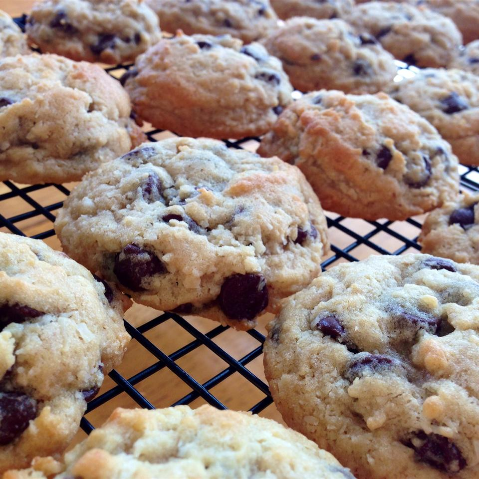

Chococonut Chip Cookies

A delicious twist on a chocolate chip recipe. It ends up tasting like an Almond Joy in cookie form.
Ingredients
1/2 cup light brown sugar
1 teaspoon vailla extract
2 1/4 cups all-purpose flour
2 cups semisweet chocolate chips
Steps
Preheat the oven to 375 degrees F (190 degrees C).
In a large bowl, cream together the butter, brown sugar and white sugar until light and fluffy. Beat in the eggs one at a time, then stir in the vanilla. Combine the flour, baking soda and salt; stir into the creamed mixture. Fold in chocolate chips and coconut. Drop by rounded spoonfuls onto cookie sheets.
Bake for 8 to 10 minutes in the preheated oven. Allow cookies to cool on baking sheet for 5 minutes before removing to a wire rack to cool completely.